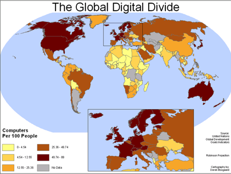

Digital Divide?
Factors
You may not see it but on a local, but on a national and global scale there are communities and people without the access to the internet or any communication or electronically enabled device. And in some areas or regions such as countries in Africa this divide is seen to the extreme.
Here is a great picture that clearly shows the difference in the access to computers that some countries have and some that don’t.
It is evident that in more wealthy countries the amount of computers per 100 people is far greater than the majority of african countries and a large proportion of the middle east as well. The main contributing factor to this is obviously the amount of wealth the country has, but also its access to electronic manufacturing and trading.
A large majority of the european countries have between 25.36% and 89% who have computers per 100% compared to the majority of african countries which have between 0% and 12.5% which goes to show how diverse the digital divide really is. Even in some areas like south america the divide is fairly significant seeing as just past mexico there is the USA which once again has one of the largest percentage computers per 100 people. The economical differences between countries has a direct correlation to their access to computers and technology which is especially evident in third world countries.
The digital divide also affects people locally as elderly people who had no idea what a computer might even be and young children at the age of 4 are getting their own iPod and downloading the latest apps and games and even transfering music and photos on to their parents laptop. The also considering fact is that technology is moving at such a fast pace that technology 2 years ago is seen by most people as old and outdated, the fact is it actually is in the modern day world.
Looking at how phones have evolved I compared a 2 year old phone from google, the nexus 4. This was compared to the similarly released nexus 6 the same time 2 years ago.
Source: Antutu.com
Upon testing them the nexus 4 scored around 18000 points, but upon testing the 2 years newer nexus phone it scored over 45000 points and both priced very similar when they came out. This just goes to show why the digital divide is so big, it also gives us the impression that if poorer continents like africa where they will receive already outdated equipment and in many years they will be far outdated and be hard to replace, once again making a divide between the wealthier and less wealthy countries.
The digital divide is also apparent to societies of people who are afraid of technology and what it could do or become and they are in no means wrong but some societies and religions will not accept the idea of modern day technology. For instance religions such as Islam in their home country do not allow for the use of devices such as computers or TV’s, and this is a governed law although it is not present everywhere. So these factors are choices by people and for people and not due to outside factors. The term technophobe also comes into this category as some people who can have easy access to computers are still afraid to use technology such as a laptop or smartphone, and have a great fear for technology in what it can become. Films where robots take over the world also don’t help with this side of the argument as images from films such Terminator or iRobot show scenes of robots injuring and killing people who only puts technology in an evermore bad state in the eyes of the public. There have been some cases where a Robot was being developed by Sony to do simple household functions but the project was shutdown due to the scare that the robot would be able to pick up a gun and shoot someone, and this scare was real and since then robots have only been deseigned for proper military use (although companies are still designing robots for the house.
The geographical locations of countries also factor in how much technology they have access to. For instance trade routes and ease of access mean that some technologies are hard to import into a country. Things such as ground type can also affect technology as routing cables through the ground will become hard if the groud in impermiable.
With all these points in mind its easy to see how to divide between cultures and continents became so big, and as I go more indepth with the digital divide you will see the positives and negatives of each points and how it influences our world today.
Impact of the divide
The economic impacts of the digital divide are quite significant. When countries want to trade with other countries on a global scale using technology such as the internet is always an easier option to carry out their transaction, but sometimes countries will have to pay extra money (loosing profits) to trade with countries with less facilities from items such as communication or bank transactions. Overall it complicates things for the country trading and makes the investment far less while than trading with countries with more capable technological advancements.
Social implications of the digital divide are also present throughout society. One major impact of this is religious beliefs. Across the globe some religious beliefs do not allow the use of technology that is used in the modern day such as mobile phones and computers. Sometimes religious states are governed by law which in using a banned devices may lead to imprisonment and further punishment. Social aspects more close to home also affect the digital divide. Things such as broadband connectivity and location in small communities also affect how much access someone has to the internet. Influences from parents or other relatives can also cause a divide such as the parents don’t want their children to use electronic devices and it is as simple as that.
Education is largely affected by the digital divide as well. If there are schools in which don’t have proper internet access then using online sources for teaching will not be possible and could cause a gap in a Childs learning and versatility from the lack of alternate sources they have learned their information from. Education can also be harder with a lack of technology such as computers as any written work will not be able to be typed up, and it is also important for children to learn to type at an early stage so if this doesn’t happen this can impair their I.T skills for a later date.
The digital divide will always be affected by culture, and peoples beliefs. This means that the divide it entirely controlled by peoples actions and what they believe in and the actions of the people . Cultures who have internet access are more able to play events or cultural meetings with others they may not have ever met but only over the internet. This enables cultures to connect in ways that were not formally possible. However the digital divide between cultures means that some will stay isolated while others are free to use the internet and other communication able devices to make the most of the modern world.
Extent of the divide
The World
The main question is the digital divide widening or narrowing. The main answer to the question is, No its getting wider, but why is it and how can it be avoided.
The gap is widening due the rate at which technology is advancing, and the gap is widening even in wealthier countries between those who know about new technology and those don’t. This further means that countries who don’t receive new technology and get ‘hand me downs’ and further behind the technological revolutions of modernist countries and will not be able to receive anymore technological help as they have just received it.
In this case the divide is getting bigger and smaller and is dependant of the economical growth of these less wealthy counteries who don't have access to the same facilities. Technology in the modern world is evolving too quickly for any 3rd world country to really compete with the countries that directly benefit from newer technology.
Moreover, third world countries then have a far smaller chance of being able to develope a company that can somewhat compete with the technological giants like phone manufactures. But the truth is they are already too far behind to be anywhere ahead. Third world countries have bigger worries on their mind than if they can have access to a computer. Disasters and living conditions really come before technology, and it always will. At the end of the day these countries are in a spiral that they can only get out of once all other opposing problems are fixed and amended.
The UK
In the UK the divide is getting ever smaller and smaller. Last generation devices can absolutely handle them selves in day to day task perfectly. You don't need to latest and greatest to have a good experience. Phones (even though they are made obsolete fairly quickly) can still perform great for many years, and many years on you can still buy the same phone of device for a greatly reduced price.
This leads onto the key point of economy and pricing. In the UK, the prices of technology has only been coming down and down as new products are announced and released. Things such as phones and tablets are released every year, and the pricing for them only ever seems to go down while the product gets better in every way.
This is because technological devices are advancing at a rate that means they need to be updated every year, of which calls for a higher demand. This supply and demand if met right can provide millions of people with the product or device they want in masses which plagues some countries where the supply doesn't always meet the demand.
Reducing the divide
How to bridge the divide
There are many ways in which we are bridging the gap of the divide in the UK and globally, but which is the best way?
Recycling
Recycling PCs is a great way to deal with the divide mainly locally. You can send the recycled PCs to third world countries but the problem with that is if they were neglected before then they are probably not worth the trip over there. Recycling old PCs for local residents who don't have their own PC is a great way to get people online. The internet and online connectivity is relatively new, easing in the idea of a free PC to people may be the straw too many that gets them online.
Depending on the condition of the PCs supplied, some may be deemed for third world countries by charities like Computer Aid. They provide old and recycled PCs for the masses in places like Africa. Imagine water aid but instead of giving people clean water, they give people the power of computing instead.
Software
My favourite way to bridge the gap is with the use of Linux. Linux is a free open source Operating System (OS) that is free to download (most of the time) and is very light weight. Considering that it is free and most PC OS like Windows and Mac OSx you have to actually pay for. Since its light weight it also means that small £25 machines called raspberry pi's can even run them, doing basic internet browing and much more. This is specifically helpful locally here in the UK where a child or elder with some pocket money can go out and buy a full working PC for only £25. Furthermore in countries such as South Asia where lots of manufacuring takes place, the ability to be able to obtain and working PC for such a small amount of money really entices people into the world of computing and learning about it for them selves.
Donations
Close the gap is a charity designed to just delivery higher quality PCs and components for educational, medical and social projects in developing and emerging countries. They are a no-profit organisation which means that everything that you donate (as long as its accepted) will be donated to a country that will really benefit from it. This approach is great because instead of giving old tech PCs that in a few years will be obsolete, they are providing a higher quality service in which the PCs they provide these countries should have a greater longevity than what some charities are providing today.
This approach to the scheme is great and is ultimatly one of the better way to bridge the digital divide gap.